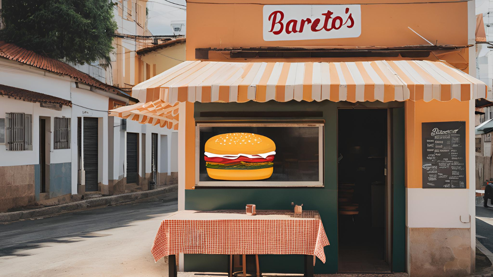

Bartô's Burguer foi fundada em 1998 em Ipatinga, Minas Gerais, por João Victor Bartolomeu (Bartô), que queria trazer hambúrgueres artesanais e autênticos para a cidade. Com uma paixão pela cozinha, Bartô usou ingredientes frescos e regionais, criando o famoso "Índio Burguer's", que logo se tornou popular. Localizada no bairro Horto, a hamburgueria cresceu rapidamente, ganhando fama por seus hambúrgueres saborosos e acompanhamentos com toque mineiro. Hoje, Bartô's é uma das hamburguerias mais queridas da cidade, um símbolo de qualidade e tradição local.